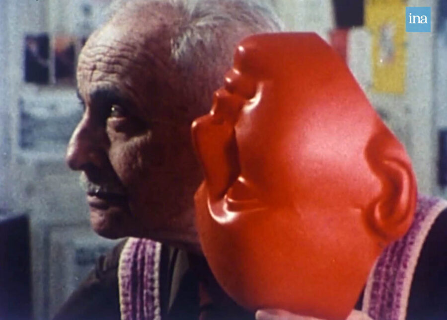

Sarah Maldoror: René Depestre, Haitian Poet / Léon G. Damas / Père Lachaise Cemetery / Louis Aragon: A Mask in Paris / Memory’s Gaze (1981 / 1994 / 1978 / 1980 / 2003)
Sarah Maldoror: René Depestre, Haitian Poet / Léon G. Damas / Père Lachaise Cemetery / Louis Aragon: A Mask in Paris / Memory’s Gaze (1981 / 1994 / 1978 / 1980 / 2003) · 5m / 28m / 7m / 19m / 24m · DCP
These films explore Maldoror’s enduring interest in poetry as a vehicle for resistance and for making sense of history. Rene Dépestre and Louis Aragon are portraits of the poets, and in Père Lachaise, the poetry of Éluard and others foreground images of the iconic cemetery. Léon G. Damas is a testament to poetry and education’s “inseparability from emancipation.” Memory’s Gaze links poet Aimé Césaire, theorist Édouard Glissant, and Haitian revolutionary Toussaint Louverture in a meditation on poetry, landscape, and histories of slavery.